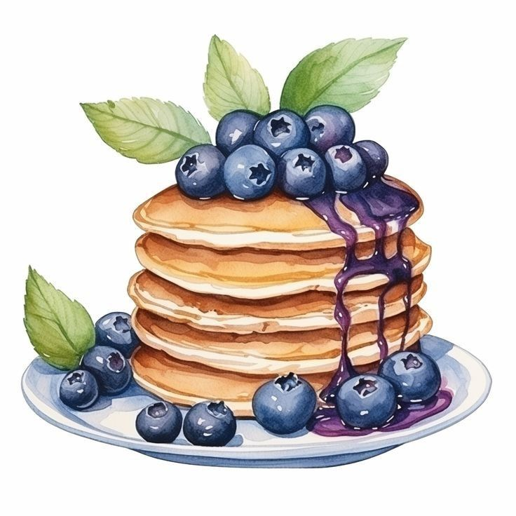

Breakfast
Fluffy Pancakes

Ingredients:
- 300 g all-purpose or plain flour
- 60 g granulated sugar or sweetener
- 18 g baking powder
- 0.25 teaspoon baking soda*
- 3 g salt
- 440 ml milk
- 60 g butter
- 10 ml pure vanilla extract
- 1 large eggs
Instructions:
Preheat a non-stick pan or griddle over medium heat. In a large bowl, whisk together the flour, sugar, baking powder, baking soda, and salt. In a separate bowl, whisk together the milk, melted butter, vanilla, and egg. Pour the wet ingredients into the dry ingredients and stir until just combined. Grease the pan with butter or non-stick spray. Use a 1/4 cup measuring cup to pour the batter onto the pan. Cook until bubbles form on the surface of the pancake, then flip and cook for another minute. Repeat with the remaining butter. Serve with your favorite toppings and enjoy!